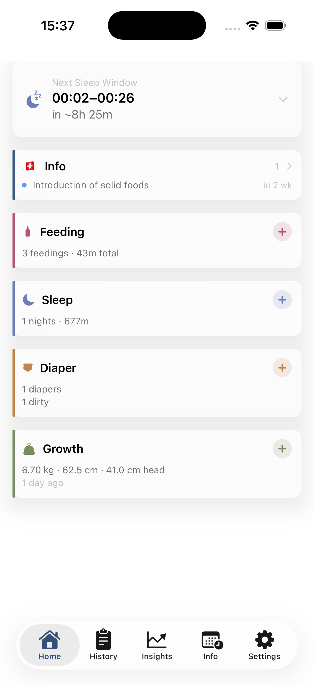
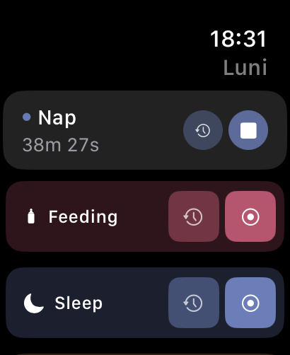
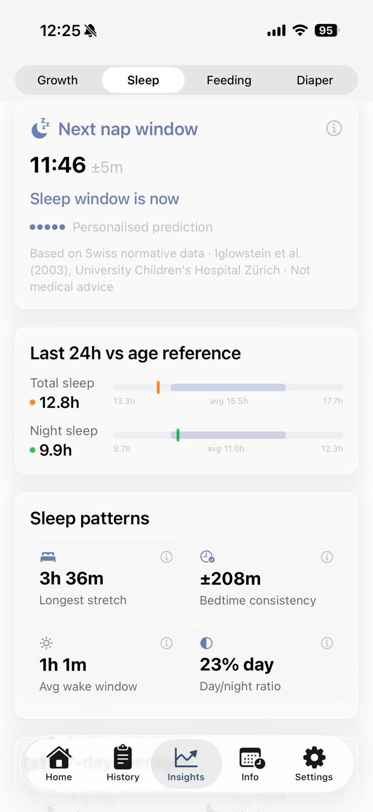
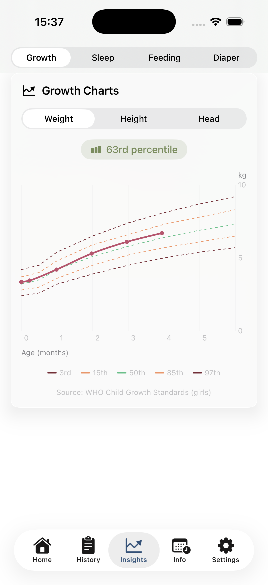
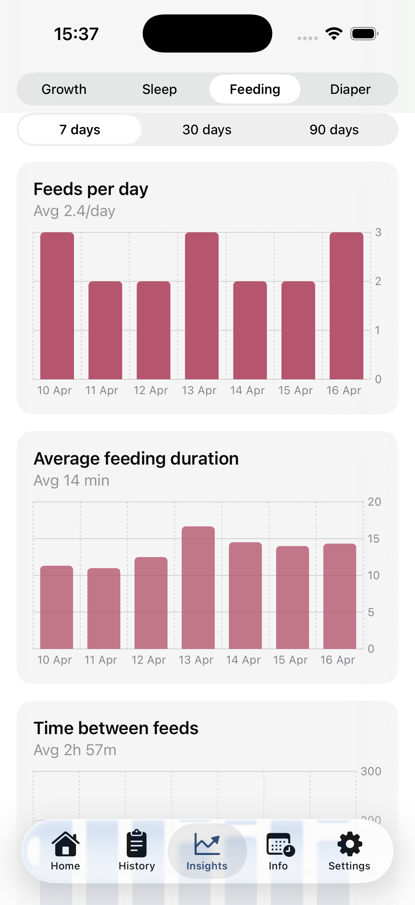
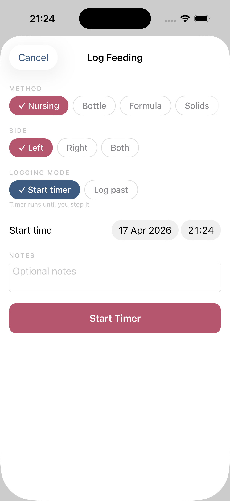
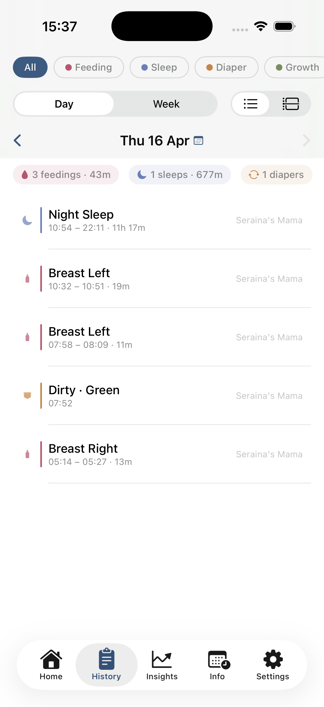
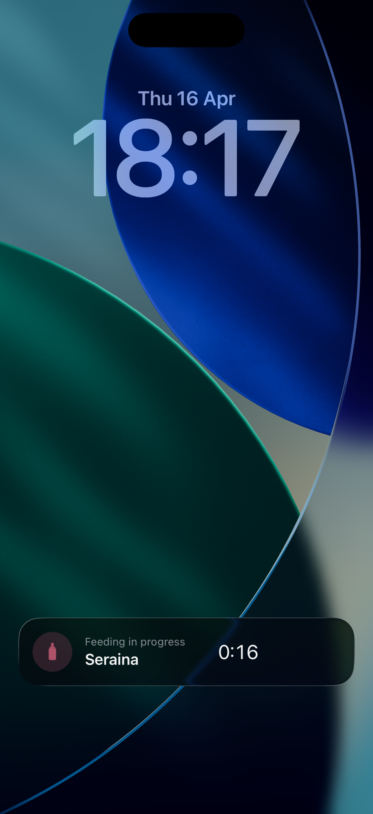
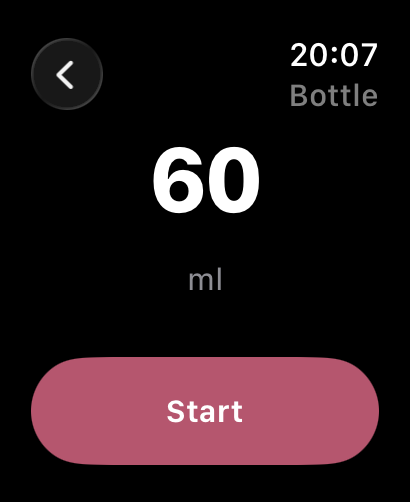

Stillzeiten, Schlaf, Windeln und Wachstum festhalten, gemeinsam mit deinem Partner, in Echtzeit. Auf iPhone und Apple Watch. Mit Datenschutz als Grundsatz, entwickelt in der Schweiz, für Familien in Europa und auf der ganzen Welt.
Kostenlos herunterladen. 🇨🇭


Alles, was deine Familie braucht







Funktionen
Für alle, die gerade kaum schlafen - aber ihr Baby nicht missen möchten. Klar und einfach zu bedienen.
Ein Baby aufzuziehen ist oft Team-Arbeit, darum ist der Partner bei Luni voll integriert. Ein Tipp, dein Partner erhält einen Link. Kein Konto, kein Passwort. Jede Mahlzeit, jeder Schlaf, jede Windel, sofort synchron via iCloud.
KostenlosBrust, Flasche und Beikost mit Live-Timern tracken. Seite wechseln. Genau sehen, wann die letzte Mahlzeit begann, auch wenn du es vergessen hast.
KostenlosLuni lernt mit, wann und wie dein Baby schläft, und sagt dir, wann das nächste Schlaffenster öffnet, bevor der Übermüdungs-Meltdown kommt.
Luni ProGewicht, Grösse und Kopfumfang eintragen, Luni zeichnet die WHO-Wachstumskurven. Beim nächsten Arzttermin hast du sie gleich parat.
Kostenlos41+ Erinnerungen für Vorsorgeuntersuchungen, Impfungen und Papierkram, zugeschnitten auf die Schweiz. Von Vitamin K nach der Geburt bis zur U5. So geht kein Termin mehr vergessen.
Luni ProBei jedem Eintrag steht dabei, wer ihn gemacht hat, du, dein Partner oder die Grossmutter. So sind alle auf dem gleichen Stand.
KostenlosStillen im Bett, keine Hand frei, das Handy ausser Reichweite? Mit der Apple Watch startest du Mahlzeiten, Timer und Windeln direkt am Handgelenk, auch wenn das Baby schon auf dir eingeschlafen ist.
Luni ProTimer fürs Stillen und den Schlaf laufen im Hintergrund weiter. Und Luni meldet sich, wenn ein Termin oder eine Impfung ansteht, oder wenn es so aussieht, als hättest du vergessen, eine Mahlzeit zu loggen.
KostenlosWenn ein Timer läuft, siehst du ihn direkt auf dem Sperrbildschirm und in der Dynamic Island. So hast du die verstrichene Zeit immer im Blick, auch wenn die App geschlossen ist.
KostenlosKein Konto. Kein Server. Keine Analyse. Alles bleibt auf deinem Gerät und in deiner persönlichen iCloud, von Apple verschlüsselt, von dir kontrolliert. Niemand sonst sieht die Daten deines Babys. Nicht einmal wir.
Entwickelt für die Schweiz
Alle Baby-Tracker, die wir gefunden haben, wurden für andere Gesundheitssysteme entwickelt, zum Beispiel das der USA, und sind nicht an die Schweiz oder andere europäische Länder angepasst.
Schweizer Gesundheitserinnerungen
Preis
CHF 10, einmalig, für immer.
Kein Abo. Keine Tricks. Keine Datenweitergabe. Nie.
Kostenlos
CHF0
Immer kostenlos. Keine Kreditkarte.
Premium
CHF10
Einmalige Zahlung. Für immer deins.
Über uns

Anna ist Software-Entwicklerin in der Robotik, Maurin Field Engineer im selben Bereich. In unserer Freizeit sind wir draussen unterwegs, kochen gern und haben immer irgendein DIY-Projekt am Laufen. Als unsere Tochter auf die Welt kam, haben wir Luni gestartet, weil wir einen besseren Baby-Tracker wollten, bei dem keine Firma mit den Daten eures Babys Geld verdient.
Luni ist aus unserem eigenen Alltag als frischgebackene Eltern entstanden. Jede App, die wir ausprobiert haben, war für andere Gesundheitssysteme gemacht, hat Daten gesammelt oder wollte ein Abo verkaufen. Das passte nicht zu uns. Wir wollten etwas für den europäischen Markt und vor allem für die Schweizer Gemeinschaft, mit echtem Datenschutz, weil wir eure Daten schlicht nicht brauchen.
Ein Baby grosszuziehen ist anspruchsvoll genug. Luni soll einfach ein kleines, ehrliches Werkzeug sein, das jungen Eltern den Alltag ein wenig erleichtert.